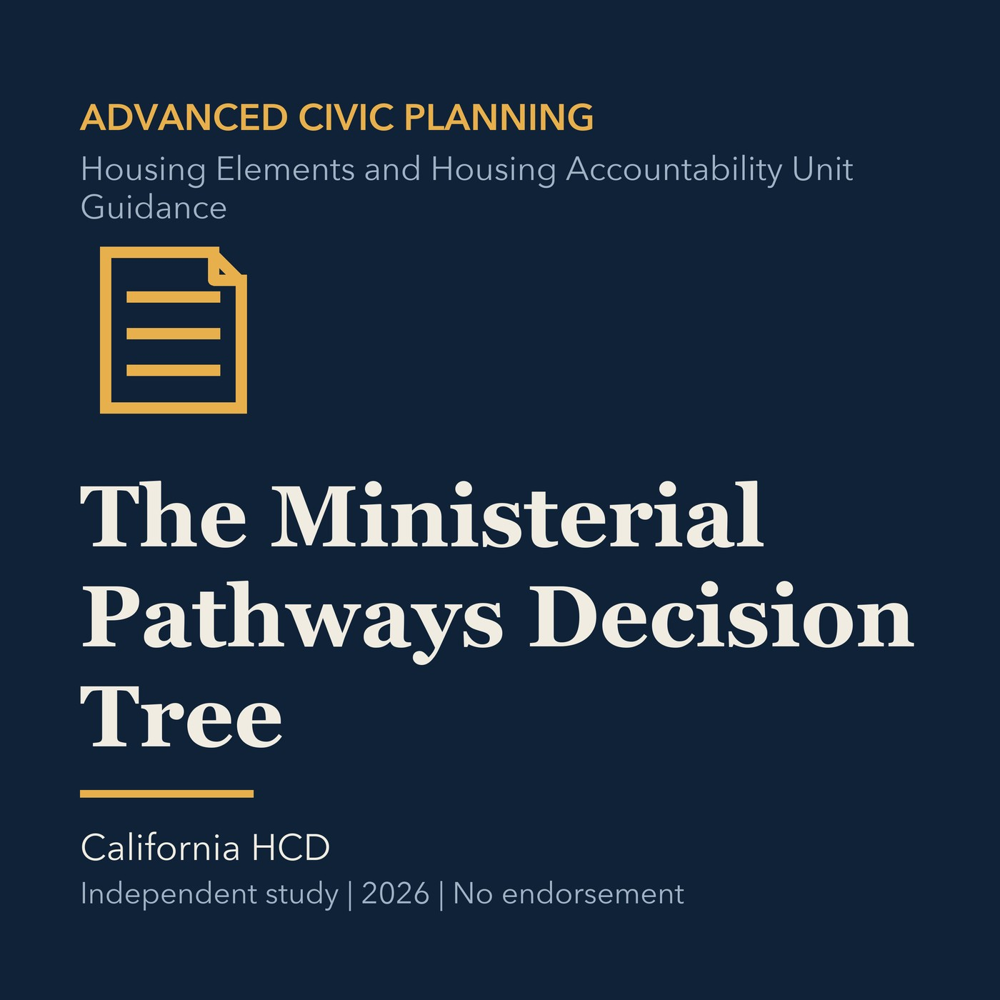

EPISODE 22
The Ministerial Pathways Decision Tree
Organizes housing approval pathways by eligibility, objective standards, and current legal authority.

- Stable GUID
aabf8678-2721-514d-8b18-d4f25549b7b5- Release
- advanced-civic-planning-v2026.3
- SHA-256
da0b6701c851af331be8fbbd4fd405ff05e8745561199e41de267c6cb4afbf59